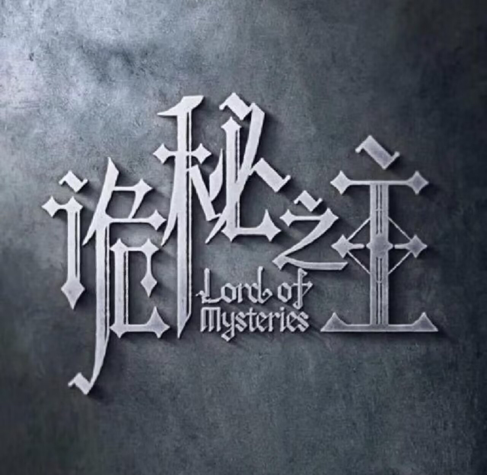
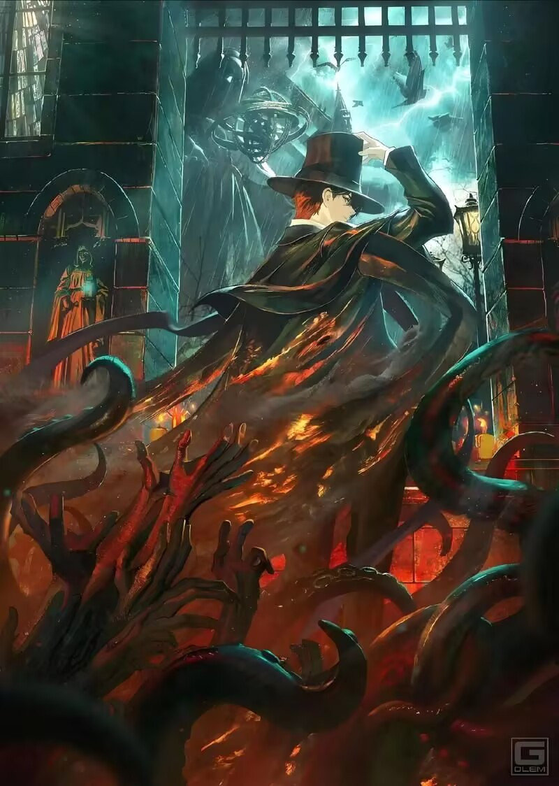

|
||||
|  |
|
|  | 小说简介 周明瑞在一阵宿醉般的头痛中醒来，却发现自己成了鲁恩王国的一名普通历史系毕业生——克莱恩·莫雷蒂。身体的原主死于一册来自第四纪的安提哥努斯家族笔记，而这份笔记，正是打开非凡世界大门的钥匙，也是缠绕命运的诅咒开端。 然而，这个看似由蒸汽、机械与煤炭驱动的时代，远非他熟悉的那个世界。枪炮与巨舰的轰鸣之下，潜藏着更为深邃、更为恐怖的暗流。魔药的配方在隐秘聚会中悄然流通，只要服下，便能踏上一条由二十二条神之途径和二百二十种魔药序列构成的、通往神灵宝座的疯狂阶梯。成为掌控火焰、占卜命运、化身阴影的“非凡者”，意味着拥有了超越凡俗的力量，但也意味着每一次晋升，都伴随着在疯狂与远古呓语中彻底失控、沦为怪物的永恒风险。 历史的尘埃并非虚妄，古老的神话若隐若现。一本来自远古的安提哥努斯笔记，一场突如其来的侦探遭遇，将克莱恩卷入了涉及数个纪元、隐秘组织和古老外神复苏的宏大阴谋中心。为了探寻回家的路，也为了守护身边的亲人与新结识的伙伴，他不得不戴上假面，以“愚者”的身份，在笼罩着无尽灰雾的古老殿堂之上，建立起一个连接各方势力的塔罗会。 从此，他行走于光明与黑暗的边缘。他是值夜者小队中谨慎小心的“占卜家”，也是神秘聚会上令强者们敬畏的“愚者”先生；他时而化身疯狂冒险家“格尔曼·斯帕罗”，时而又以慷慨富豪“道恩·唐泰斯”的身份周旋于贝克兰德的贵族圈。他见证并参与着这个时代最波澜壮阔的画卷：诅咒与封印物在阴影中低语，七位正统神灵于星界俯视人间，而在繁荣的蒸汽浪潮之下，是一个被层层历史迷雾掩盖、扭曲、疯狂、等待被唤醒的诡秘世界。 这是“愚者”克莱恩·莫雷蒂的传说，是一段小人物在时代洪流中挣扎求存、逐步揭开世界真相的旅程，也是一曲关乎文明轮回、神明博弈与人性光辉的宏大史诗。 |
蒸汽与机械的浪潮中，谁能触及非凡。历史和黑暗的迷雾里，又是在耳语。从诡秘中醒来，睁眼看见这个世界：
枪械，大炮，巨舰，飞空艇，差分机；魔药，占卜，诅咒，倒吊人，封印物……光明依旧照耀，神秘从未远离，这是一段“愚者”的传说。
黑铁纪元，七位正统神灵与四大国统治着北大陆。蒸汽与机械的浪潮中，工业化社会迅速发展成形，而在看似平静繁荣的表面下，则是一个神秘扭曲，乃至疯狂的非凡世界。
不属于这个时代的愚者啊
你是灰雾之上的神秘主宰
你是执掌好运的黄黑之王